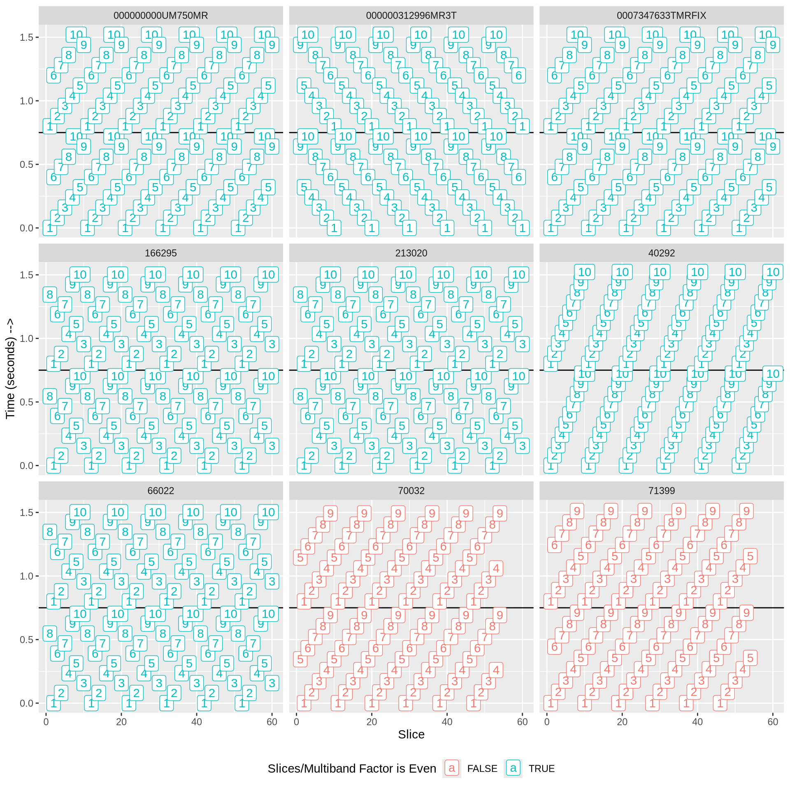
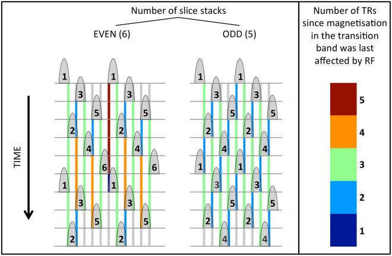

A2CPS fMRI “Slice Packets” Issue
The information here concerns a theoretical issue in a multiband SMS setup that could impact A2CPS: slice crosstalk may occur when a non-ideal number of slices is used, which would affect sites using the standard ABCD protocol setup with 60 slices for fMRI. In practice no evidence of a problem has been found.
Problem Description
The problem was first described by Setsompop et al. (2012), and was also summarized in the review of SMS by Barth et al. (2016). In essence, the problem is one of timing. In the inherently interleaved acquisition of a multiband scan, sets of slices (“slice subgroups” in Setsompop et al. (2012), “slice stacks” in Barth et al. (2016), and “slice packets” in subsequent references to those works and current usage) are acquired together, and are arranged to avoid contiguous slices being activated in consecutive TRs.

The problem with cross-talk is introduced when slices from one TR inadvertently become contiguous to slices from the next one. Figure 1 shows an illustration of the problem. The left side shows a 12-slice acquisition (slices run vertically) in a MB-2 acquisition with 6 slice packets (numbered 1-6). Color codes indicate the temporal gap (in slice TRs) between a slice acquisition and any contiguous slice over a span of 2 volume TRs, with blue the worst case (shortest gap).
In the non-ideal case on the left, one slice from the last slice packet (here, 6) is adjacent to a slice from the first in the following volume TR, potentially causing cross-talk and a loss of signal in the second slice. If the number of slice packets is made odd (right side of figure), in this case by cutting the number of slices to 10, the temporal spacing becomes much more uniform, and the problem does not occur. Note that the existence of the problem depends on using the simplest, most straightorward sequential acquisition of slices. Vendors have developed counter-measures in a variety of ways, as shown in the A2CPS data below.
ABCD/A2CPS Protocols
The ABCD fMRI protocol acquires 60 slices with a multiband factor of 6, which means the number of slice packets should be even (10). However, the A2CPS study modified this setup at two of the initial MCC1 sites (UChicago and NorthShore) by reducing the number of slices to 54, and this change makes the predicted number of slice packets for acquisitions at those sites odd (9).
Given slice timing information, which is also advantageous to have for slice timing correction in fMRI analyses, we can verify whether any slices are closer than desired, and also review vendor approaches to this issue. Figure 2 shows the variety of slice-timing schemes used across the sites. None exhibit a concerning level of proximity between final/initial slices of subsequent volumes.
Impacts
Based on the analysis of Setsompop et al. (2012), the expected effect if cross-talk does occur would be for the subsequent adjacent slice (i.e. the slice from slice packet 1 that is adjacent to a slice in the final slice packet of the previous volume) to lose signal and appear darker; there would then be a potential brightness difference between this slice in the first volume (which has no prior volume to reduce its signal) and all later volumes as well as a difference between the affected slice and its neighbors within each volume after the first. The presence of motion will generally exacerbate cross-talk, so any impact on the affected slice may be worse with increased motion. However, we have detected no loss of signal in theoretically vulnerable slices within the A2CPS data.
References
Barth, Markus, Felix Breuer, Peter J Koopmans, David G Norris, and Benedikt A Poser. 2016. “Simultaneous Multislice (SMS) Imaging Techniques.” Magnetic Resonance in Medicine 75 (1): 63–81. https://doi.org/10.1002/mrm.25897.
Setsompop, Kawin, Julien Cohen-Adad, Borjan A Gagoski, et al. 2012. “Improving Diffusion MRI Using Simultaneous Multi-Slice Echo Planar Imaging.” Neuroimage 63 (1): 569–80. https://doi.org/10.1016/j.neuroimage.2012.06.033.